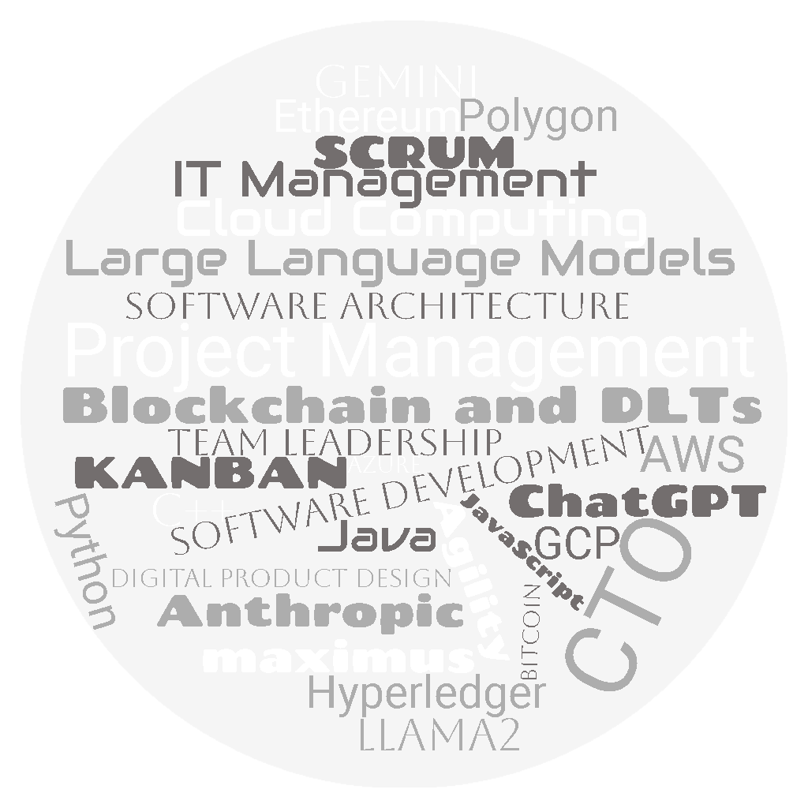

Hi, I am Pablo Mogollón, a systems engineer working for large multinational, small niche companies, and
startups in different countries in America and Europe for the last 20 years. My passions, in order of
importance, are my family (my 'ikigai'), exploring diverse countries and cultures, and leveraging technology
to solve real-world problems and drive business success.
I've earned several master’s degrees and have experience working in both large multinationals and
specialized small companies across more than half a dozen countries. My expertise lies in developing and
operating high-performance, highly-available platforms, and in the creation, development, and leadership of
IT teams. Over the past five years, I've been applying this knowledge to assist in the formation and growth
of IT teams and platforms for startups and Small and Medium-Sized Companies.
To learn more about my professional background, feel free to download my CV (available in English and
Spanish at the end of this section) or visit my social network profiles at the
end of the page.
I enjoy dealing with the challenges presented in this environment and addressing and resolving them. This
is why I am currently offering Fractional CTO Services remotely. But what exactly is a CTO? What do
Fractional Services entail? How can a CTO assist my startup or company in achieving its goals? I'll address
these questions in the next section.

Fractional CTO Services
What is a CTO?
The acronym 'CTO' stands for 'Chief Technology Officer', a key role responsible for guiding an organization's
technological direction. A CTO is typically highly experienced, with extensive knowledge across various domains
including software development, networking, team leadership, project management, budgeting, and other technical
and administrative disciplines.
What are Fractional CTO Services?
For startups and small to medium-sized organizations, employing a full-time CTO might be a stretch. Yet, it's
during the early stages of a startup or a new project that making the right technological and team structure
decisions is most critical.
Fractional CTO Services offer a solution. These services provide access to the expertise and guidance of a CTO on
a part-time basis. By agreeing on a set number of weekly or monthly hours, organizations can establish their
technology strategy and receive guidance to implement it effectively.
Sometimes, the CTO might undertake specific projects or tasks on a limited, part-time basis. This could include
developing a Minimum Viable Product (MVP) or shaping the structure of the IT team and aiding in the selection of
its initial members.
What a CTO can do for you?
A CTO can significantly enhance your team's efficiency and effectiveness in various scenarios:
Materializing Technical Aspects of Your Business Idea: Entrepreneurs often
juggle numerous tasks, including commercial plans, customer interactions, pricing, and more. If you lack the
time or technical know-how, a CTO can step in to design and plan your Minimum Viable Product (MVP), choose
suitable technologies, and even assist in building a lean development team. This includes determining hiring
needs and deciding which roles can be outsourced to ensure outstanding results.
Supporting Your Current Technical Team: Perhaps you have a skilled
developer who crafted the MVP with a small team. Initially, everything may have seemed perfect, with growing
customer numbers and rising sales. However, over time, you might face challenges like increased maintenance or
bug-fixing tasks, leading to customer service issues and a slowdown in your company's growth. This is where a
CTO can provide invaluable guidance and mentorship, create a development plan for your technical
leader, discuss current problems and potential solutions, and help your team enhance performance and evolve
into the technical backbone your organization needs.
Managing Complex Initiatives: If your platform is running smoothly with
happy customers and steady sales growth, but you face a challenging new project like implementing a CRM or ERP
system, or a unique customer request, a part-time CTO can be a game-changer. They can handle the technical
aspects of such complex initiatives, manage temporary extended services, develop necessary software, and
eventually transition control and knowledge back to your team.
For a more detailed description of the services, please download the document in English, Spanish, or Portuguese.
Startups
I often assist startups in specific projects or temporary assignments to address particular challenges. I've also
had the opportunity for longer-term collaborations, which I'd like to highlight below:
This was a service offering automated data formatting and cleaning for files in MS Excel,
CSV, and JSON formats. It involved using heuristic algorithms and statistical models to fix various data quality
issues. Although this startup is currently inactive, I enjoyed designing the digital product and
defining the technology roadmap.
An innovative telematic legal counseling startup. Their teleconferencing software lacked
certain functionalities and the desired quality level. I identified a mix of existing services that could be
easily integrated to provide the required functionality at a high-quality level.
A Chilean startup providing remote online voting services. The project faced challenges with
a complex software development project that consumed considerable time, money, and resources without clear
outcomes. I restructured the IT Team, developed the MVP, and defined the technology evolution roadmap. I am
currently involved in developing SmartVoting's new platform.
A Colombian online clothing store serving the Chilean market. They manage their online store
without a dedicated IT team. I assist them occasionally in selecting suitable technologies for their needs and
in developing office scripts or enhancing the functionality of their website.
Posts
Now and then I like to comment on my personal opinions on technical and organizational topics related to IT
leadership
Coronavirus, datos y responsabilidad:
(2020-03-25) - A Medium post highlighting the frequent mismanagement of COVID data in the media.
Classical Reads on Software Development Management:
(2023-02-02) - My thoughts on several of my favorite classic books about IT management and leadership.
Elevating Team Game: A Workshop Approach to Software Development Proficiency:
(2023-10-21) - The first in a four-article series on how to expedite the onboarding process for new software
development team members.
Enterprise Applications of Blockchain Technologies:
(2023-10-27)Conference in Spanish about Blockchain and Decentralized Ledger Technologies for the 2nd
International Congress of Engineering at the Universidad Libre Seccional Cúcuta.
Workshop Session 1 - The Team and the Project:
(2023-11-28) The second article focusing on accelerating the learning curve during the onboarding of new
software development team members.

 (2023-02-02) - My thoughts on several of my favorite classic books about IT management and leadership.
(2023-02-02) - My thoughts on several of my favorite classic books about IT management and leadership.